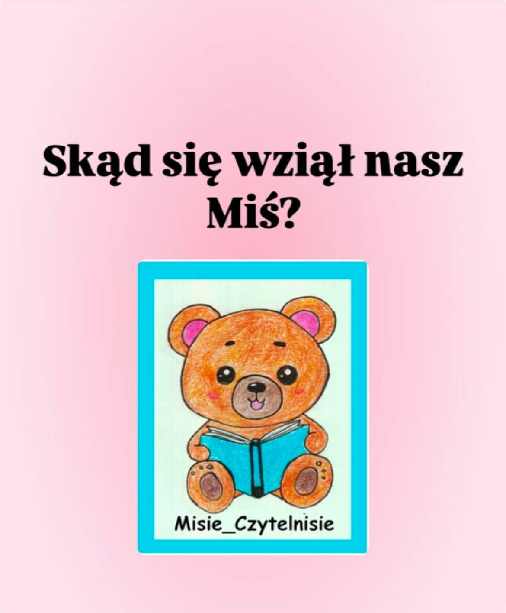
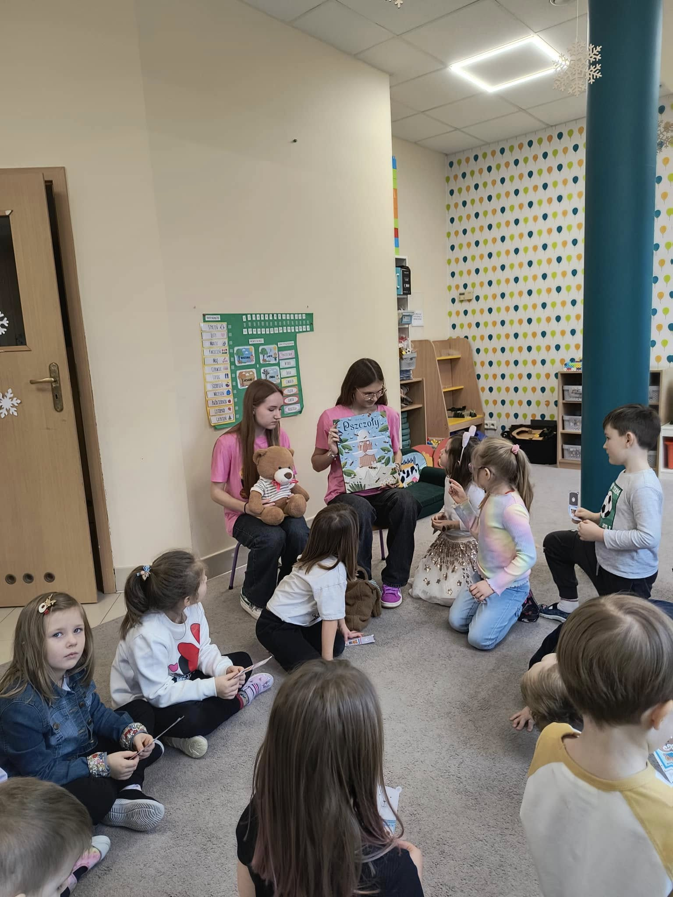
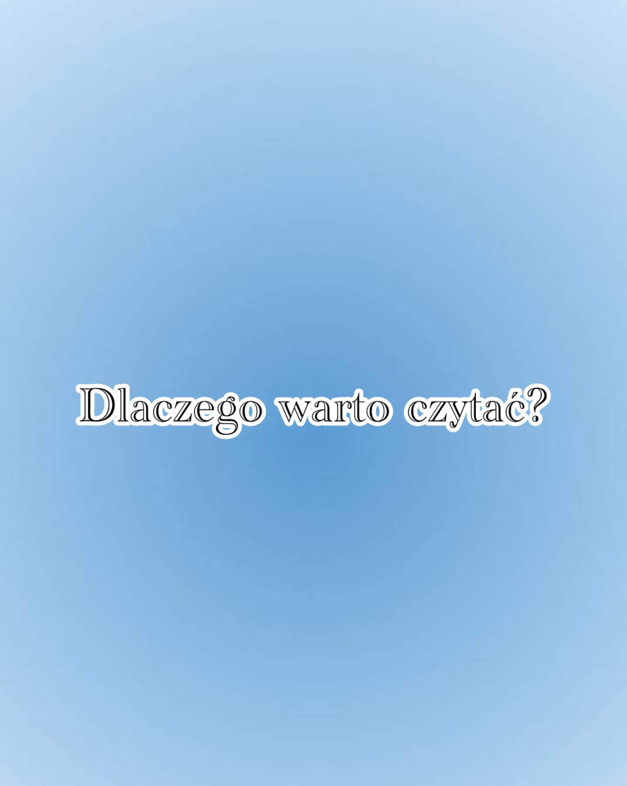
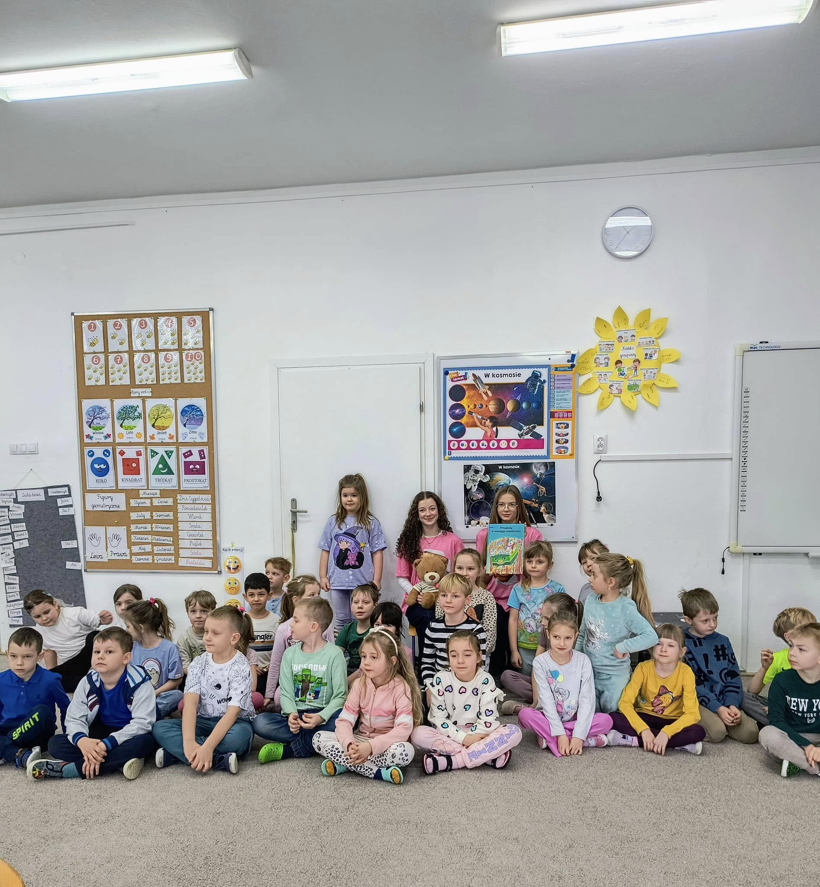
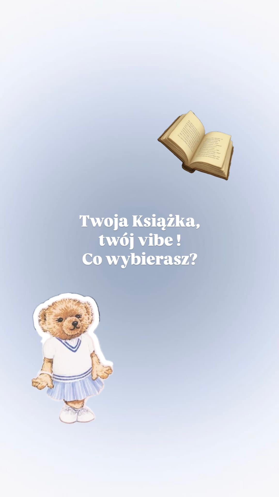
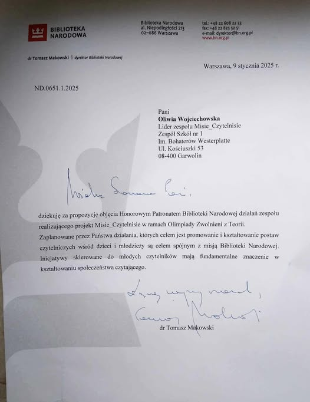
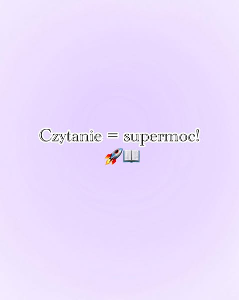

Misie_Czytelnisie to inicjatywa, której celem jest promowanie czytelnictwa wśród najmłodszych dzieci. Wierzymy, że kontakt z książką od najmłodszych lat nie tylko rozwija wyobraźnię, ale także kształtuje nawyki, które przynoszą korzyści przez całe życie. Chcemy, aby dzisiejsze maluchy stały się w przyszłości dorosłymi, którzy kochają czytać.
â€Wierzymy, że miłość do czytania zaczyna się w dzieciństwie. Poprzez wspólną zabawę, warsztaty i inspirujące książki, pomagamy najmłodszym rozwijać wyobraźnię i zapał do nauki. Czytanie to prezent, który zostaje na całe życie!â€
Nasze Działania
Warsztaty czytelnicze: Regularne spotkania dla dzieci, podczas których czytamy książki i zachęcamy do interakcji z tekstem.
Spotkania z autorami i ilustratorami: Wprowadzamy dzieci w świat twórców literatury dziecięcej.
Mobilne biblioteczki: Organizujemy wypożyczalnie książek dla najmłodszych w przedszkolach i świetlicach.
Kreatywne zabawy literackie: Gry, konkursy i projekty plastyczne inspirowane książkami.
Dlaczego Czytanie Jest Ważne?
Rozwijanie wyobraźni i kreatywności.
Poprawa koncentracji i umiejętności językowych.
Budowanie więzi podczas wspólnego czytania z rodzicami.
Jak Działamy?
Organizacja wydarzeń lokalnych.
Współpraca z przedszkolami, bibliotekami i rodzicami.
Tworzenie rekomendacji książkowych dla najmłodszych.
Nasze Social Media:
Zostań częścią Misiów Czytelnisiów!
Dla rodziców: Jak wspierać dzieci w czytaniu w domu.
Dla instytucji: Zaproś nas do swojej placówki!
Dla darczyńców: Wspieraj nasze działania poprzez darowizny na książki i materiały edukacyjne.
Nasze pierwsze wyjście
W ramach Ogólnopolskiej Olimpiady Zwolnieni z Teorii zespół Misie_Czytelnisie w składzie: Alicja Potyra, Zuzanna Potyra, Emilia Laskowska, Zofia Władzińska, Patryk Pacholec oraz liderka Oliwia Wojciechowska, promuje czytelnictwo wśród dzieci i młodzieży. Mentorem jest p. Edyta Kacprowicz, a w projekcie wspierają nas p. Angelika Chabrowska i p. Agnieszka Karwowska. Działania projektu wspiera Biblioteka Szkolna. 3 grudnia 2024 r. przedstawicielki zespołu Misie_Czytelnisie …

Miś – wierny towarzysz dzieciństwa i symbol ciepła, teraz pomaga w promowaniu czytelnictwa! 🧸📚
Cześć! W tym poście pokazujemy, dlaczego miś jest idealnym symbolem naszej akcji Misie_Czytelnisie. Razem z nim zachęcamy was do odkrywania magii książek. Wiecej informacji szukajcie na naszym facebooku. 📖✨
Czy zastanawialiście się kiedyś, ile niesamowitych historii i tajemnic kryje nasza szkolna biblioteka? My postanowiłyśmy to sprawdzić! W ramach projektu “Misie Czytelnisie†nagrałyśmy dla Was maÅ‚Ä… wycieczkę po tym wyjątkowym miejscu, żeby pokazać, jakie skarby czekają na odkrycie! ğŸ¥ğŸ“–
🔹 Co znajdziecie w bibliotece?
Od klasyki po nowości, od fantastyki po literaturę popularnonaukową – każdy znajdzie tu coś dla siebie! 📚💡 Czytanie to nie tylko obowiązek, ale przede wszystkim przyjemność i przygoda! 🌍💫
Nie brakuje też lektur szkolnych, które wcale nie muszą być nudne – wystarczy dać im szansę! 😉
Zapraszamy Was do biblioteki – może znajdziecie tam swoją nową ulubioną książkę? ❤️
📢 A może macie już swoją ulubioną książkę ze szkolnej biblioteki? Podzielcie się w komentarzach! 👇
Dziecięca kreatywność w akcji! 🎨🧸
Mali artyści stworzyli piękne rysunki misiów! Każdy z nich jest wyjątkowy i pełen dziecięcej wyobraźni. Takie chwile pokazują, jak wspaniale można łączyć zabawę z rozwijaniem talentów !
Cześć! Zachęcamy do wsparcia naszej akcji â€Przynieś książkę dla maluszka†więcej informacji w poście

W dniu 17.01.2025 r. przedstawicielki Projektu Misie_Czytelnisie: Zosia Władzińska i Emilka Laskowska pod opieką p. Edyty Kacprowicz, zawitały razem z misiem 🻠do Niepublicznego Przedszkola Juniorek w Garwolinie. Odwiedziły starszą grupę przedszkolaków, którym czytały uwielbiane przez dzieci książki 📚. Dzięki wspólnemu czytaniu maluchy rozwijały wyobraźnię 🌟 i nawiązywały nowe przyjaźnie ğŸ¤. Na koniec czytania uczennice przeprowadziły rozmowę z dziećmi na temat ich ulubionych książek 📖 i podarowały własnoręcznie przygotowane kolorowe zakładki do książek z logo i kodem QR projektu oraz naklejki z nadrukiem misia ğŸ¾.
Po wysłuchaniu lektury nadszedł czas na zabawę! 🉠Emilka i Zosia zaproponowały przedszkolakom ciekawe gry i zabawy ruchowe 🤸â€â™€ï¸ğŸ¤¸â€â™‚ï¸. Był to wspaniale spędzony czas z maluchami 💕, który pokazał, jak wspólne czytanie pomaga nawiązywać pozytywne relacje.

Jeśli też kochasz książki , zostaw ❤️ w komentarzu! Jaka jest twoja ulubiona?

📖🻠Misie Czytelnisie ponownie w akcji! ğŸ‰âœ¨
18 lutego 2025 r. przedstawicielki projektu Misie_Czytelnisie – Oliwia Wojciechowska i Zuzanna Potyra – pod opieką pani Edyty Kacprowicz odwiedziły Publiczne Przedszkole nr 1 â€Bajka†w Garwolinie. Tym razem przygotowałyśmy dla maluchów wyjątkowe spotkanie pełne literackich przygód i kreatywnych zabaw!
Najpierw wspólnie zanurzyliśmy się w świat książek 📖. Następnie, zainspirowane opowieściami, przedszkolaki miały okazję wykazać się swoją kreatywnością, rysując Misia – symbol naszego projektu 🐻🎨. Nie zabrakło również ruchu i śmiechu – wspólnie bawiliśmy się w różne gry, które dostarczyły mnóstwo radości i pozytywnej energii!
Na zakończenie każdemu uczestnikowi wręczyłyśmy kolorowe zakładki do książek 📚 oraz naklejki z naszym misiem ,🐾 jako nagrodę za zaangażowanie i wspaniałą zabawę. To spotkanie kolejny raz pokazało, jak ważne jest wspólne czytanie i jak wiele radości może sprawić dzieciom świat książek!
Dziękujemy przedszkolakom i nauczycielom za ciepłe przyjęcie 💕. Już nie możemy doczekać się kolejnych spotkań!

“Twoja książka, Twój vibe – co wybierasz?†📖✨
Dzisiaj przedstawiamy Wam pomysł na to, jak książki mogą mówić więcej o Was, niż Wam się wydaje. Może to być tajemniczy świat pełen przygód, historia o miłości, która porusza serce, albo opowieść, która inspiruje do działania. A może coś jeszcze innego?
Każda książka ma swój wyjątkowy klimat, który możemy zabrać ze sobą i uczynić częścią naszego życia. Książki to nie tylko historie – to emocje, inspiracje i małe fragmenty magii. 🕊️💫
Podzielcie się w komentarzach, jaką książkę wybieracie, i pokażcie, co najlepiej oddaje Wasz vibe! Czekamy na Wasze odpowiedzi. 🌸

✨ OGROMNY SUKCES! ✨
Z dumą ogłaszamy, że nasz projekt Misie Czytelnisie uzyskał Honorowy Patronat Biblioteki Narodowej – najważniejszej instytucji promującej czytelnictwo w Polsce! 🇵🇱🤍❤️
To dla nas niezwykłe wyróżnienie i dowód na to, że wspólne działania na rzecz promocji czytania mają wielką wartość. Dziękujemy wszystkim, którzy wspierają nas w tej misji – razem udowadniamy, jak ważna jest miłość do książek już od najmłodszych lat! 📖🧸
Dziękujemy również Bibliotece Narodowej za zaufanie i wsparcie. Razem możemy zdziałać jeszcze więcej! 💪📖

Jeśli też czujesz moc książek, zostaw 🔥w komentarzu i napisz, co teraz czytasz!
Dziecięca kreatywność w akcji! 🎨🧸
Mali artyści stworzyli piękne rysunki misiów! Każdy z nich jest wyjątkowy i pełen dziecięcej wyobraźni. Takie chwile pokazują, jak wspaniale można łączyć zabawę z rozwijaniem talentów !